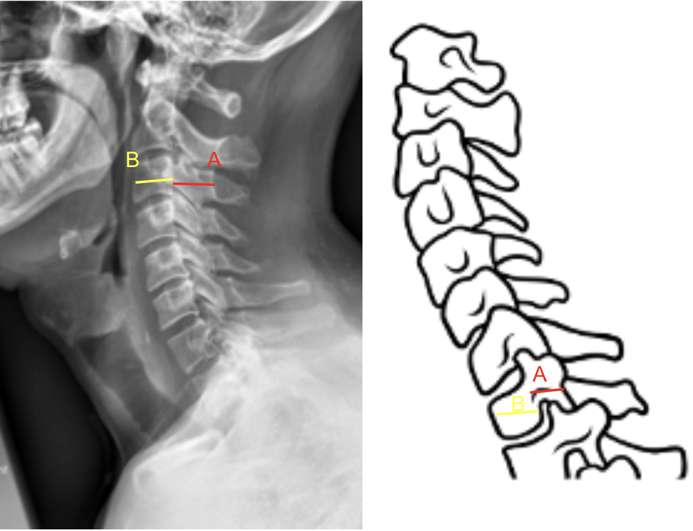
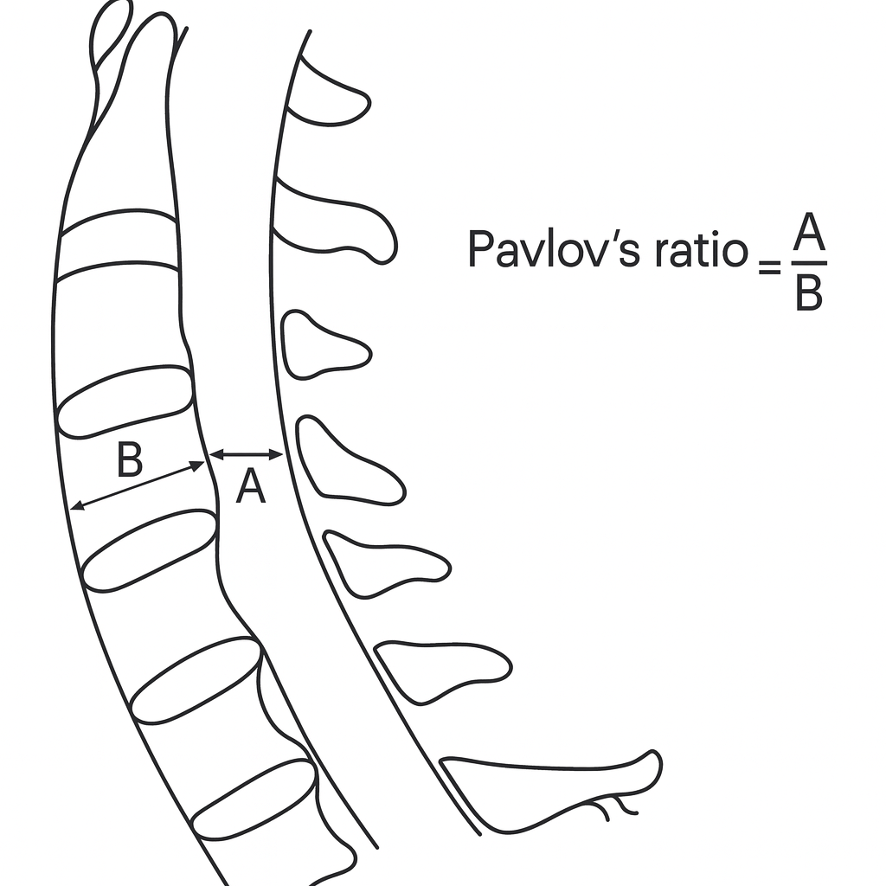

1) Description of Measurement
The Torg/Pavlov Canal-to-Body Ratio is a radiographic metric used to evaluate cervical spinal canal stenosis on a lateral cervical spine X-ray.
It represents the ratio between the sagittal diameter of the spinal canal and the sagittal diameter of the corresponding vertebral body at the same level.
This ratio helps account for radiographic magnification errors and provides a reliable screening tool for detecting congenital or acquired cervical stenosis, which predisposes patients to myelopathy or spinal cord injury even after minor trauma.
2) Instructions to Measure
3) Normal vs. Pathologic Ranges
4) Important References
Pavlov H, Torg JS, Robie B, Jahre C. Cervical spinal stenosis: determination with vertebral body ratio method. Radiology. 1987 Sep;164(3):771-5. doi: 10.1148/radiology.164.3.3615879.
Lamothe G, Muller F, Vital JM, et al. Evolution of spinal cord injuries due to cervical canal stenosis without radiographic evidence of trauma (SCIWORET): a prospective study. Ann Phys Rehabil Med. 2011 Jun;54(4):213-24. English, French. doi: 10.1016/j.rehab.2011.02.003. Epub 2011 Mar 21.
Boden SD, McCowin PR, Davis DO, et al. Abnormal magnetic-resonance scans of the cervical spine in asymptomatic subjects. A prospective investigation. J Bone Joint Surg Am. 1990 Sep;72(8):1178-84.
Qudsieh H, Al-Rawashdeh I, Daradkeh A, et al. Variation of Torg-Pavlov ratio with age, gender, vertebral level, dural sac area, and ethnicity in lumbar magnetic resonance imaging. J Clin Imaging Sci. 2022 Sep 1;12:53. doi: 10.25259/JCIS_67_2022.
5) Other info....
The Torg/Pavlov Ratio eliminates magnification error, making it reliable across different radiographic setups.
It is a screening measurement; confirmatory evaluation with MRI or CT should be performed if the ratio is ≤ 0.7 or symptoms suggest cord compression.
A Torg/Pavlov ratio ≤ 0.7 correlates closely with reduced space for the cord and a higher risk of neurological injury during hyperextension trauma.
Congenital stenosis (low ratio across multiple levels) is distinguished from acquired stenosis (focal narrowing due to osteophytes, disc protrusion, or ligamentous hypertrophy).
The C5–C6 level typically has the smallest canal and is the most clinically significant region for evaluating stenosis.
Dynamic flexion-extension films may further demonstrate functional narrowing of the canal.